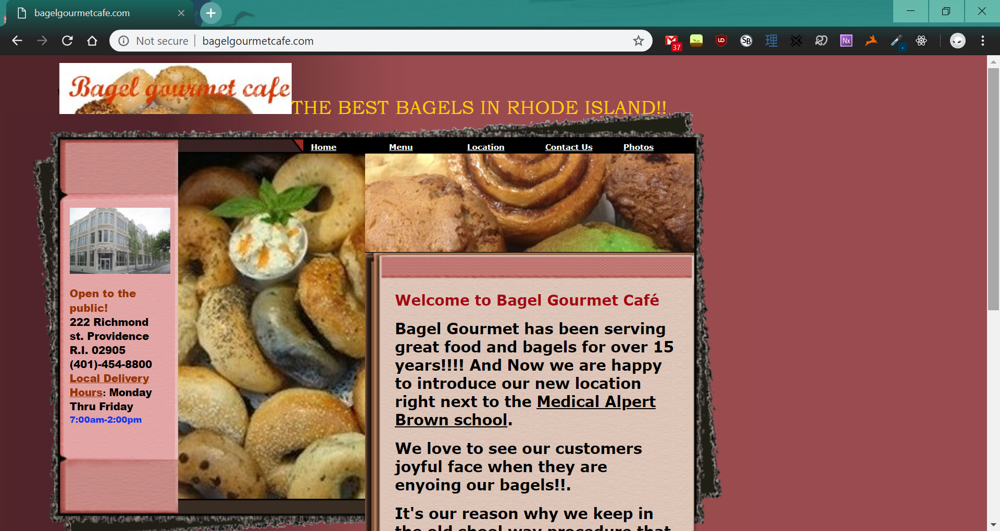
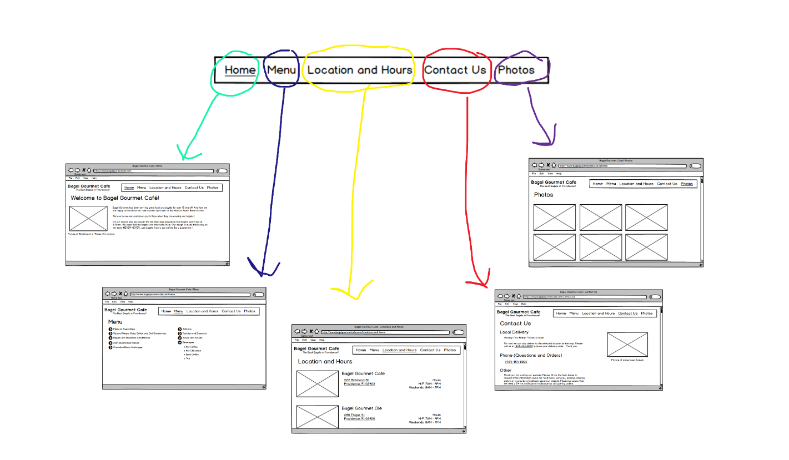
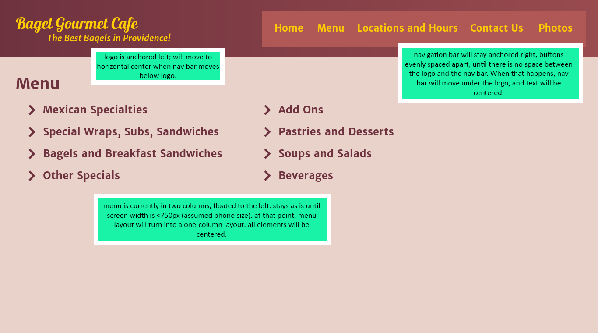
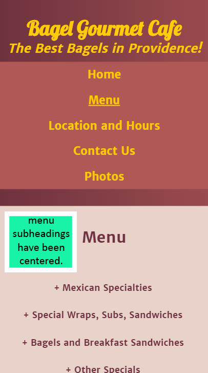
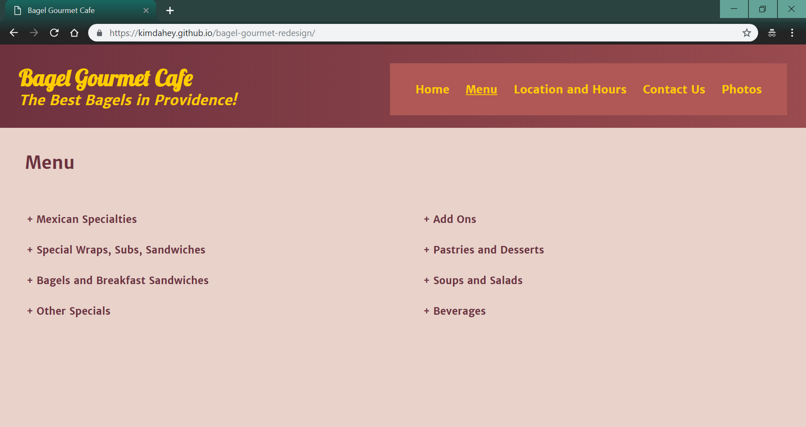

summary
For my UI/UX course, we were tasked to redesign any website of our choosing, and to make it responsive to screen resizing. I used HTML, CSS, a little bit of Javascript to redesign a website for one of my favorite breakfast spots to go to: Bagel Gourmet Cafe. You can view the final product here!
start: the original website

This is the front page of the website for Bagel Gourmet Cafe.
The division of information between each page is logical, and the navigation bar is visible at all times, which is a plus for intuitive design. However, the navigation bar does not stay once you leave the front page, and there is a span of confusion before you realize that it’s moved to the sidebar. Sometimes there are subpages that don’t appear unless you’re on the parent page, which contributes to the poor ease of learning for this site. Even for an experienced user, the smallness and poor contrast of the navigation links make it hard for efficiency of use — once getting used to the site, memorability is still a little poor because of said issue.
The error frequency and severity tends to be high for this website, because there are many misleading visual cues, especially with text color. All in all, however, although the subjective satisfaction with the website function may be low, this redesigner’s subjective satisfaction with the website is grudgingly given to be in the positive. In the end, the color choices and overall design truly feels like it fits the Bagel Gourmet aesthetic — gradient background and all.
first step: wireframing

This first wireframe clearly illustrated the issue of the navigation bar - I wanted to have a clear and accessible way to navigate between pages, unlike the original website.

While I did wireframes of four other pages from the original website (Home, Photos, Locations and Hours, and Contact Us), I ultimately chose to continue redesigning specifically with the Menu page.
second step: hifi mockups

This desktop hifi mockup, with annotations, gave me a roadmap for what I wanted to create in HTML/CSS. This redesign prioritized two things — preserving the original color palette in a more palatable form, and general page layout in making navigation of the page easier. I decided to really solidify the permanence of the logo and the navigation bar for each page by encapsulating them in a header, noted by the darker color gradient that comes from the original site’s background.

As we were doing a responsive redesign, I also made a hifi mockup for what I wanted the site to look like with different screensizes - for example, if I was viewing my site on my phone.
final step: coding

Going from hifi mockup to actual HTML/CSS also allowed me to make more final decisions on some of the design choices that I had been deliberating with. I limited my choice of fonts to just two, and picked ones that mimicked the feel of the original site; Lobster provided a close feel for the cursive logo, while Merriweather Sans paired well with the logo, was clear and legible, and provided easy readability for the rest of the text on the page.
reflection
This was the first time that I had coded a site from scratch, and I really enjoyed learning how to use wireframing and hifi mockups to help clarify my final vision for the Bagel Gourmet redesign. I also appreciated the chance to learn more CSS, especially flexboxes and the @media tag. It was especially nice to be able to create this website based on something that I was passionate about, and I had a lot of fun experimenting with different looks and layouts, to try and best preserve some of the best parts of the site. This was also a good opportunity to learn how to use Github Pages, so that I could access this site from anywhere I wanted to!